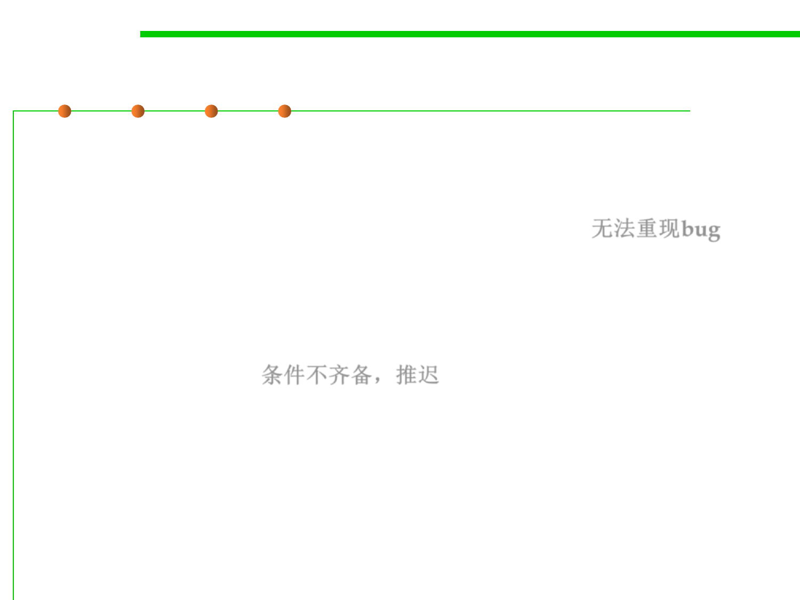

Description of Stages
7.4 Debugging
▪ Could not reproduce: If developer is not able to reproduce the bug
by the steps given in bug report by QA then developer can mark the
bug as ‘CNR’. QA needs action to check if bug is reproduced and can
assign to developer with detailed reproducing steps. 无法重现bug
▪ Postponed: Sometimes, testing of a particular bug has to be
postponed for an indefinite period. This situation may occur because
of many reasons, such as unavailability of Test data, unavailability of
particular functionality etc. That time, the bug is marked with
‘Postponed’ status. 条件不齐备，推迟